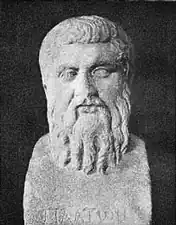

Федр — (20 до н. е. або 15 рік до н. е., Пієрія, Македонія — 70 рік н. е.) — давньоримський поет, байкар давньогрецького походження.
Федр народився в області Пієрія у Македонії. Був греком за походженням. Змалку став рабом. За яких обставин це трапилося невідомо. Незабаром він потрапляє до Риму, де здобуває освіту. Проте вона була досить загальною та поверхневою. За наказом імператора Августа його було відпущено на волю.
Після цього він був шкільним вчителем-граматиком. Знайомиться з ідеями стоїцизму, прихильником якого стає. Тоді ж став складати байки. За часи правління імператора Тіберія Федр у своїх байках виступав з критикою володаря та його можновладця Сеяна. За це зазнав утисків та вирушив у вигнання з Риму. Після страти Сеяна у 31 році повертається до Риму, де продовжує свою літературну діяльність. Він знаходить меценатів серед заможних та впливових римлян — це Евтіх, Партикулон, Філет. Їм Федр присвячує свої байки. До кінця життя Федр продовжував працювати із створення байок та жити у Римі. Проте щодо деталей його життя у цей період нічого невідомо. Помер Федр ймовірно у Римі. Писав Федр латиною. Спочатку Федр у складанні байок наслідував Езопа, але поступово виробив власний стиль. Темами байок Федра були політичні події та діячі, соціальні негаразди. Особливою темою стають особисті вади людини. Всього Федром складено близько 150 байок. Прикметно, що у Федра менше байок про тварин і більше байок про людей, відтак у його творах не так виразно помітні риси баєчного жанру. Прикметним явищем є також особлива увага Федра до моралі байки. Він ставиться до неї як до найважливішої частини твору, яка іноді навіть починає витісняти власне фабульний компонент: опис дії зводиться до мінімуму, мораль же, навпаки, розширюється, захоплюючи жвавістю і пристрасністю викладу. Нерідко автор вкладає її в уста одного з персонажів байки. А іноді сентенційні висловлювання виголошують історичні чи псевдоісторичні особи (Езоп, Сократ та ін.). У деяких творах Федра розповідної частини майже немає, і байка перетворюється на простий монолог, присвячений морально-етичній проблематиці. В Україні до сюжетів Федрових байок почали звертатися із середини XVIII ст. (Г. Сковорода), у XIX ст. їх переказували Л. Боровиковський, Є. Гребінка, Л. Глібов та ін. Численні сюжети Федра використав І. Франко. Перше повне україномовне видання байок Федра вийшло друком у 1986 р. у перекладі В. Литвинова.